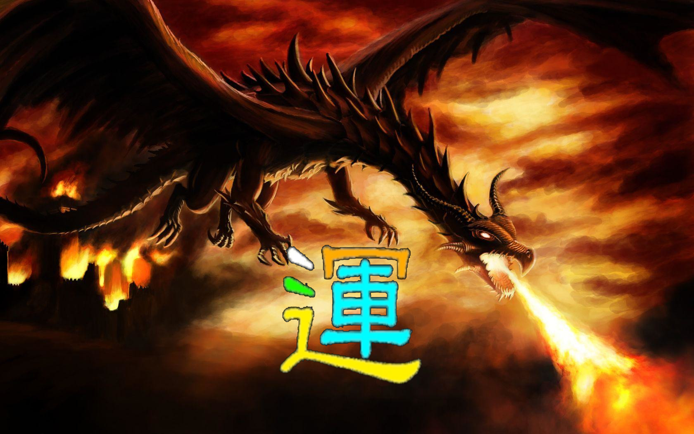

O dragão de duas cabeças
O brasão da Guarda Nacional Republicana é um escudo verde. Ao centro, uma espada antiga de ouro. Seguram-na dois dragões afrontados, também de ouro, animados, lampassados e armados de vermelho. No timbre, um terceiro dragão empunha a mesma espada. A leitura oficial é curta e antiga: a espada representa o carácter castrense; os dragões, a defesa da lei e da grei.
«Grei» é uma palavra que já quase ninguém usa. Designava o rebanho, o povo, a comunidade dos que precisam de guarda. Não é o Estado, nem o Governo, nem a nação abstracta: é o conjunto concreto de pessoas que dorme atrás daquela porta. A Portaria n.º 129/73, que aprovou o brasão, usa exactamente essa palavra: «grei». O dragão da GNR não guarda um tesouro; guarda uma promessa.
Na tradição europeia, o dragão é quase sempre o monstro. Guarda o ouro, devora o herói, exige donzelas. É a fera que São Jorge mata. O dragão da GNR pertence a essa família visual, mas foi domesticado pela burocracia: continua a ter dentes, garras e língua de fogo, mas está dentro de um escudo, com uma espada na pata. É a força que se deixou encerrar num regulamento. A pergunta de todo o dossiê é esta: o que acontece quando o regulamento falha e a fera fica sozinha?
Na Ásia, o dragão é outra gramática. O lóng chinês não é o monstro que cospe fogo sobre aldeias; é a água que fecunda, a nuvem que traz a chuva, o yang que organiza o mundo. É um dos quatro animais auspiciosos, com o fénix, o qilin e a tartaruga. Pode ser imperial — o imperador era o Filho do Céu e o dragão de cinco garras era o seu emblema —, mas também é o animal que representa a sabedoria que atravessa o tempo. No Japão, o ryū habita rios e mares; na Coreia, o yong protege o céu; no Vietname, o rồng é fundador e guardião. Em toda a Ásia, o dragão não pede culto: pede discernimento.
Há uma cena que resume esta outra metade. Segundo o Shiji de Sima Qian, Confúcio visitou Laozi e voltou perturbado. Disse aos discípulos: «Sei como voam os pássaros, como nadam os peixes, como correm os animais. Sei caçá-los. Mas o dragão, não sei: sobe nas nuvens e no vento até ao céu. Hoje vi Laozi. Não será ele semelhante ao dragão?» O dragão, aqui, não é o inimigo a abater. É o limite do entendimento, a forma que a sabedoria toma quando já não cabe numa definição.
O dragão da GNR tem, por isso, duas cabeças. Uma morde — é a força legítima, a intervenção, a detenção, o último recurso. A outra pensa — é o discernimento, a proporcionalidade, a recusa da ordem injusta, o cuidado com quem está do outro lado da farda. Uma instituição sem a primeira é uma promessa sem meios. Uma instituição sem a segunda é uma espada sem punho.
A força sem sabedoria é tirania. A sabedoria sem força é impotência. O dragão completo é a tensão entre as duas — nunca o equilíbrio definitivo.
Tese deste dossiêO blog já tinha escrito sobre este animal antes de a GNR entrar nesta página. Em A Lenda do Macaco Dragão, o dragão é «a sabedoria ancestral, silenciosa e profunda do espírito»; em Dragon Fire (龙火), a palavra é fogo que pode ferir; em Monkey Memories, «o Dragão esteve sempre lá como guardião e protector eterno». E o Tao lembra que a força que se dobra também governa. Não é estranho, portanto, que a Guarda use um dragão. Estranho seria se o usasse apenas para assustar.
A longa gestação de uma polícia militar
Antes de haver GNR, houve medo. Lisboa crescia sem iluminação, sem polícia profissional e sem aquilo a que hoje chamaríamos inteligência criminal. Em 1801, o príncipe regente D. João aprovou a criação da Guarda Real da Polícia, por proposta do intendente Pina Manique. O modelo veio de França: a Gendarmerie, criada em 1791, era uma força militar com funções policiais, precisamente para garantir que a ordem não dependesse apenas de milícias locais. Portugal copiou a ideia com uma exigência de elite: os melhores soldados do Exército, solteiros, robustos, até aos 30 anos, de «boa morigeração e conduta».
A Guarda não nasceu para ser querida. Nasceu para ser respeitada. O regulamento dizia que o corpo devia ser «uma Força Nacional, que segure a tranquilidade interna da Capital». A frase é reveladora: a capital, não o país. Durante décadas, a polícia de Lisboa e a do Porto foram instituições separadas, com lógicas próprias, ciúmes próprios e uma relação difícil com o poder político.
A cidade e o medo
A Guarda Real da Polícia de Lisboa é criada por influência de Pina Manique, inspirada na Gendarmerie francesa. É um corpo de elite, com funções de polícia e organização militar. A experiência de 1793, com uma companhia militar de polícia, tinha sido o ensaio.
A corte parte, a Guarda fica
Com a invasão francesa, a família real embarca para o Brasil. A Guarda permanece em Lisboa e o seu comandante, o conde de Novion, colabora com Junot. Alguns oficiais e soldados juntam-se ao exército português; 41 deles combatem no Vimeiro, onde o seu capitão morre. A instituição aprende cedo a lição mais incómoda: servir o Estado não é o mesmo que servir o regime.
A factura da fidelidade
No fim da guerra civil, a Guarda Real é extinta por ter estado do lado de D. Miguel. Nasce a Guarda Municipal de Lisboa e a do Porto, com características semelhantes. Em 1868, as duas passam a ter um comando-geral unificado no Quartel do Carmo, o mesmo edifício que ainda hoje é a sede da GNR.
A última força monárquica
A Guarda Municipal é a última força monárquica a render-se aos republicanos. A ironia é quase literária: a instituição que resistiu à República é renomeada Guarda Republicana e, no ano seguinte, recebe o nome que ainda hoje tem.
Há um fio que atravessa estes primeiros cem anos: a Guarda serve quem está no poder, mas sobrevive à queda de quem está no poder. Muda de nome, de farda, de tutela e de juramento. O que não muda é a quadrícula: a presença capilar no território, o conhecimento do terreno, a capacidade de estar onde a polícia urbana não chega. É essa continuidade que explica por que razão a GNR de 2026 ainda se reconhece na Guarda de 1801, apesar de tudo o que mudou.
A Guarda no século que mudou tudo
Em 3 de Maio de 1911, um decreto cria a Guarda Nacional Republicana. A fórmula é a que ainda hoje define a instituição: militares organizados num corpo especial de tropas, dependentes do ministério da segurança pública em tempo de paz e do ministério militar para a doutrina, o armamento e o equipamento. Em guerra ou crise grave, passam para o comando operacional das Forças Armadas. É uma dupla natureza que nunca deixou de ser uma dupla tensão. O aniversário da Guarda é 3 de Maio; a patrona é Nossa Senhora do Carmo.
Durante o Estado Novo, a Guarda foi chamada a garantir a ordem pública, escoltar autoridades e proteger instalações. Como todas as forças de ordem de um regime autoritário, não esteve fora da política: esteve dentro dela, com o dever de obedecer e a margem de discricionariedade que qualquer policiamento de rua contém. Essa é uma parte da história que a instituição não deve apagar, porque é exactamente o que permite compreender o 25 de Abril.
Na manhã de 25 de Abril de 1974, Marcelo Caetano refugiou-se no Quartel do Carmo, sede do Comando-Geral da GNR. Ali foi cercado pelas forças de Salgueiro Maia e ali se rendeu. A ditadura terminou dentro da casa da Guarda. A cena tem uma força simbólica que nenhum brasão consegue resumir: a instituição que tinha guardado o regime foi também o último tecto do regime, e sobreviveu ao regime que caiu. Nos anos seguintes, a democracia reconstruiu a tutela, a fiscalização e o mandato. A GNR passou a depender do Ministério da Administração Interna, com uma ligação militar ao Ministério da Defesa.
Em 1993, a Guarda absorveu a Guarda Fiscal, criada em 1885. Não foi uma fusão administrativa: foi a entrada da GNR no mundo dos impostos, das alfândegas, do contrabando e da criminalidade económica. Em 2006, integrou o Corpo Nacional da Guarda Florestal e reforçou o SEPNA, o Serviço de Protecção da Natureza e do Ambiente. A Guarda deixou de ser apenas a polícia das estradas e das aldeias; passou a ser também a polícia do dinheiro e da floresta.
A reforma de 2007 — Lei n.º 63/2007 — redesenhou a estrutura. As antigas brigadas territoriais desapareceram, os comandos territoriais passaram a depender directamente do comando central e as unidades especializadas ganharam peso. A Brigada de Trânsito, que tinha sido uma das faces mais visíveis da GNR, foi extinta no processo; a sua estrutura central deu lugar à Unidade Nacional de Trânsito e os destacamentos passaram para os comandos territoriais. A extinção foi também uma resposta a escândalos de corrupção. Em 2018, o GIPS transformou-se na Unidade de Emergência de Protecção e Socorro, dando à Guarda uma capacidade própria de primeira intervenção em fogos rurais.
Em 2026, o Governo anunciou o regresso da Brigada de Trânsito. A nova unidade deveria nascer «nos moldes da antiga», com cerca de 1 300 militares na fase inicial e rotação de funções para prevenir corrupção. Até ao fecho deste dossiê, em 23 de Outubro de 2026, não havia data de arranque anunciada, nem lei orgânica alterada, nem sede definida. A reforma estava anunciada; a instituição ainda não existia. É uma diferença que este artigo não quer apagar.
A Guarda aprendeu a sobreviver mudando de nome, de tutela e de inimigo. O que a manteve igual foi a quadrícula: estar em todo o lado antes de ser chamada.
Uma hipótese sobre 225 anos de continuidadeHá, claro, uma leitura menos generosa. Uma instituição que sobrevive a todos os regimes pode ser vista como uma instituição que se adapta a todos os poderes. A resposta a essa acusação não está no brasão nem na cronologia; está naquilo que a Guarda faz quando a ordem política colide com a lei. É aí que o dragão mostra se guarda a grei ou apenas a espada.
O mapa da Guarda — comandos, unidades e serviços
A GNR é uma força de segurança com natureza e organização militares. Tem jurisdição em todo o território nacional e no mar territorial e uma dupla tutela: o Ministério da Administração Interna para a segurança pública, o Ministério da Defesa para a doutrina e a dimensão militar. Não se organiza em «divisões» como um exército em campanha. Organiza-se em comandos, unidades e serviços, com uma lógica simples: cobrir o território, especializar o que exige técnica e concentrar no centro aquilo que não pode ser improvisado. É uma máquina de presença — e é por isso que os números de efectivo, quartéis e viaturas importam tanto como os de detenções.
A estrutura de comando tem o Comando-Geral no Quartel do Carmo, em Lisboa, e três comandos funcionais: o Comando Operacional, que coordena a actividade no terreno; o Comando da Administração dos Recursos Internos, que gere pessoas, material e dinheiro; e o Comando da Doutrina e Formação, que produz a doutrina e a formação. A estes juntam-se órgãos de inspecção e disciplina, como a Inspecção da Guarda e a Direcção de Justiça e Disciplina.
Na investigação criminal, a Direcção de Investigação Criminal (DIC) coordena os Núcleos de Investigação Criminal (NIC) dos comandos e destacamentos, superintende os inquéritos que exigem investigação prolongada e assegura a ligação ao Ministério Público e à Polícia Judiciária. É a estrutura que transforma a ocorrência em processo e a suspeita em prova.
No terreno, os 20 comandos territoriais são a espinha dorsal. Cada um é comandado por um coronel ou tenente-coronel e organiza-se em destacamentos, subdestacamentos e postos territoriais. É aqui que a GNR é mais parecida com o que era em 1801: um sargento num posto remoto, que conhece as famílias, os caminhos e os conflitos antes de qualquer relatório. A GNR cobre 94% do território, 52% da população e 97% da rede rodoviária; a PSP concentra-se nos grandes centros urbanos. Nas ilhas, a lógica é outra: os comandos dos Açores e da Madeira têm vocação sobretudo costeira e fiscal.
As unidades especializadas
Unidade de Intervenção (UI)Ordem pública · incidentes críticos · contraterrorismo
É o braço táctico da Guarda. Actua quando a situação excede a capacidade de uma patrulha: distúrbios graves, tomada de reféns, ameaça terrorista, engenhos explosivos, segurança de instalações sensíveis e projecção de forças para missões internacionais. Integra o Grupo de Intervenção de Ordem Pública (GIOP), o Grupo de Intervenção de Operações Especiais (GIOE), o Grupo de Intervenção Cinotécnico (GIC), o Centro de Inactivação de Explosivos e Segurança em Subsolo (CIESS) e o Centro de Treino e Aprontamento de Força para Missões Internacionais (CTAFMI).
O papel da UI é ser a excepção. Se é chamada todos os dias, algo está mal na base; se nunca é chamada, algo está mal na preparação.
Unidade de Emergência de Protecção e Socorro (UEPS)Fogos rurais · socorro · catástrofe
Substituiu o GIPS em 2018 e é a face da Guarda nos incêndios rurais, nas cheias, nos deslizamentos e nos acidentes graves. Não substitui os bombeiros: faz primeira intervenção e apoio à Autoridade Nacional de Emergência e Protecção Civil (ANEPC), protege populações, coordena evacuações e colabora na investigação das causas. Tem equipas helitransportadas, equipas cinotécnicas de busca e o Núcleo Especial de Operações Subaquáticas.
Em 2025, realizou 4 069 intervenções em ataque inicial e 941 em ataque ampliado, com uma taxa de sucesso de 93,56% nas missões de ataque inicial. A frase «sucesso» significa contenção na primeira fase, não ausência de dano.
Unidade de Segurança e Honras de Estado (USHE)Órgãos de soberania · honras · representação
É o rosto cerimonial e a segurança dos símbolos do Estado. Integra o Esquadrão Presidencial, o Grupo de Honras de Estado, o Grupo de Segurança, a Charanga a Cavalo e a Banda da Guarda. Garante a guarda do Palácio de Belém, do Palácio de São Bento e de outras instalações dos órgãos de soberania, além de escoltas e honras a altas entidades nacionais e estrangeiras.
Numa democracia, o protocolo não é decoração: é a forma visível de dizer que o poder não pertence a quem o exerce.
Unidade de Controlo Costeiro e de Fronteiras (UCCF)Costa · mar territorial · fronteiras marítimas
Vigia a costa, o mar territorial e as fronteiras marítimas. Opera o Sistema Integrado de Vigilância, Comando e Controlo (SIVICC), uma rede de sensores ao longo da orla, e controla embarcações, passageiros, carga e postos de fronteira. É a herdeira do Serviço Marítimo da antiga Guarda Fiscal.
Em 2025: 174 812 acções de vigilância e patrulhamento, 44 591 embarcações monitorizadas, 5 785 701 pessoas controladas em fronteiras marítimas e 2 810 vistos concedidos em postos de fronteira.
Unidade de Acção Fiscal (UAF)Impostos · alfândegas · contrabando · fraude
É a polícia fiscal e aduaneira da Guarda. Fiscaliza mercadorias sujeitas a impostos, controla a circulação de tabaco, álcool e combustíveis, investiga fraude fiscal e contrabando, e executa mandados de detenção e buscas no âmbito económico. Sucedeu à antiga Brigada Fiscal, absorvida em 1993.
Em 2025: 22 012 autos elaborados, 238,5 milhões de euros de fraude e evasão fiscal estimadas, 8,87 milhões de euros de mercadoria apreendida, 2,78 milhões de euros de tabaco e 40,1 milhões de euros de coimas aplicadas.
Unidade Nacional de Trânsito (UNT)Doutrina · fiscalização · segurança rodoviária
Substituiu a estrutura central da antiga Brigada de Trânsito. Não tem subunidades territoriais próprias: a fiscalização do dia-a-dia é feita pelos 23 destacamentos de trânsito dos comandos territoriais. À UNT compete uniformizar procedimentos, formar os militares, gerir os cinemómetros e conduzir operações especiais de fiscalização.
Em 2025, a GNR fiscalizou 2 464 526 condutores e levantou 493 021 autos de contraordenação. Detectou 24 591 crimes rodoviários — 14 463 por condução em estado de embriaguez e 7 549 por falta de habilitação legal —, num total de 26 512 infracções por álcool e 94 648 por excesso de velocidade.
Escola da Guarda (EG)Formação · doutrina · memória
Forma os militares da GNR e mantém a doutrina comum. Integra os centros de formação da Figueira da Foz e de Portalegre. Os oficiais são formados na Academia Militar, numa ponte permanente entre a cultura militar e a cultura policial. A Escola é, por isso, o lugar onde o dragão aprende a morder sem perder a cabeça.
O que não é uma unidade
O SEPNA — Serviço de Protecção da Natureza e do Ambiente — não é uma unidade autónoma. É uma rede de equipas especializadas nos comandos territoriais, com coordenação nacional, criada em 2006 com a integração da Guarda Florestal. A NIAVE — Núcleos de Investigação e Apoio a Vítimas Específicas — é outra rede, dedicada a violência doméstica, menores e vítimas vulneráveis. E a Brigada de Trânsito, apesar do anúncio de 2026, ainda não existe como unidade operacional. Chamar-lhe «divisão» é impreciso; chamar-lhe «já em funções» seria falso.
Há ainda uma unidade que não aparece nos cartazes: o posto territorial. É o sargento que conhece o nome do velho que se perdeu, a criança que falta à escola e o homem que bate na mulher. É a ponta mais fina da quadrícula e, muitas vezes, a única presença do Estado num sítio onde o Estado só existe quando há problema.
O que a farda segura — os números que não fazem manchete
Os relatórios de actividades são o género literário mais injustiçado da administração pública. Ninguém os lê, todos os citam, e quase sempre se resumem a uma frase: «a criminalidade subiu» ou «a criminalidade desceu». Mas um relatório de 336 páginas contém uma coisa mais interessante: a textura do trabalho que não aparece nas notícias. É aí que se percebe o que uma força de 23 449 pessoas faz durante um ano.
Além dos 160 380 crimes gerais, a GNR registou 3 456 crimes violentos e graves e 1 310 casos de delinquência juvenil (menores de 16 anos). São os números que explicam por que razão a patrulha de proximidade não é um luxo: é a primeira linha de uma cadeia que começa muito antes da detenção.
Há uma forma de ler estes números que não é estatística: é geografia. 1 526 554 acções de patrulhamento e 85 903 192 quilómetros percorridos num ano equivalem a mais de duas mil voltas ao equador terrestre. Não é uma metáfora de grandeza; é a descrição de uma presença. A GNR não chega aos sítios por telepatia. Chega por estrada, por trilho, por rio, por mar e, cada vez mais, por sensor.
Barras à escala do maior valor diário (6 752); os valores absolutos estão impressos à direita. Fonte: GNR, Relatório de Actividades 2025.
O que se apreendeu
| Indicador | Valor | Leitura |
|---|---|---|
| Acções de cumprimento de mandados de busca | 4 856 | 2 301 domiciliárias e 2 555 não domiciliárias. |
| Veículos apreendidos | 1 301 | 1 206 veículos recuperados. |
| Armas de fogo apreendidas | 2 999 | Mais 87 332 munições e 119 kg de explosivos. |
| Telemóveis e material electrónico | 2 977 | Prova digital em investigação criminal. |
| Documentos de identificação e viagem | 303 | Fraude documental e imigração irregular. |
| Inquéritos iniciados | 5 766 | 5 740 concluídos; 4 373 pendentes para 2026. |
A estrada como frente de trabalho
A GNR fiscaliza 97% da rede rodoviária nacional. Em 2025, isso traduziu-se em 2 464 526 condutores fiscalizados, 493 021 autos levantados e 24 591 infracções tipificadas como crime. Os dois números que mais dizem sobre o país são, porém, outros: 26 512 infracções por condução sob efeito de álcool e 94 648 por excesso de velocidade. São 73 e 259 por dia, respectivamente. A estrada é o lugar onde a imprudência se repete com uma pontualidade quase administrativa.
A escala é dominada pelo número de condutores; as restantes barras foram mantidas para mostrar a proporção real, não para as engrandecer.
Mar, fronteira, imposto
Há uma GNR que quase nunca aparece na televisão: a que controla 174 812 acções de vigilância costeira, monitoriza 44 591 embarcações e controla 5 785 701 pessoas em fronteiras marítimas. É a Guarda dos portos, das marinas, dos cruzeiros e das cargas. É também a que estima 238,5 milhões de euros de fraude e evasão fiscal, apreende 8,87 milhões de euros de mercadoria e aplica 40,1 milhões de euros de coimas. O crime económico não sangra na rua, mas retira dinheiro ao Estado que paga a rua.
| Área | Valor | Detalhe |
|---|---|---|
| Acções de vigilância costeira | 174 812 | 479 por dia; 44 591 embarcações monitorizadas. |
| Pessoas controladas em fronteiras marítimas | 5 785 701 | 15 851 por dia; 2 810 vistos concedidos. |
| Autos fiscais elaborados | 22 012 | 2 311 processos investigados. |
| Fraude e evasão fiscal estimadas | €238,5 M | Mercadoria apreendida: €8,87 M; tabaco: €2,78 M. |
| Alunos abrangidos | 678 429 | 16 302 acções de sensibilização em 4 604 escolas. |
| Idosos sinalizados | 43 074 | 146 761 idosos sensibilizados; 981 pessoas com deficiência sinalizadas. |
| Projecções internacionais | 705 | 411 internacionais formados pela GNR; 1 393 acções conjuntas. |
A segurança que se vê é a detenção. A segurança que se vive é a patrulha que ninguém viu, o terreno limpo que ninguém notou e o aluno que aprendeu a não entrar no carro de um estranho.
Leitura dos números de 2025Nada disto torna a Guarda imune à crítica. Pelo contrário: é precisamente porque o trabalho é vasto, discreto e discricionário que a fiscalização se torna mais necessária. Os números positivos não são um certificado de virtude; são o mapa do que está em jogo quando a instituição falha.
A conta humana — o que os relatórios contam em números
No Relatório de Actividades de 2025 há uma página que não costuma ser citada. Diz: «Em resultado da actividade operacional, há a lamentar 1 óbito, e o registo de 3 feridos com necessidade de internamento, 159 feridos ligeiros e 172 agressões sem ferimentos.» São números pequenos numa tabela grande. São, no entanto, a medida exacta do risco que a farda transporta.
Em Agosto de 2024, cinco militares da GNR morreram na queda de um helicóptero no rio Douro, perto de Lamego. Em Outubro de 2025, um militar morreu ao serviço na zona do Guadiana. Em Julho de 2026, Jorge Manuel Fernandes Monteiro, de 29 anos, militar da GNR que servia na área do trânsito, morreu em serviço. Três datas, três lutos, uma instituição que continua a fazer o turno seguinte.
A violência contra agentes não é uma abstracção estatística. As 172 agressões sem ferimentos e os 159 feridos ligeiros de 2025 significam que, em média, houve quase um incidente registado por dia — e que muitos outros não o foram. Há uma cultura de silêncio que trata a agressão como «parte do trabalho» e o trauma como fraqueza. É uma cultura que mata mais devagar do que uma arma, mas mata.
A coragem não é um recurso infinito. Uma força que conta os seus mortos em relatórios precisa de contar também o sono, o alcoolismo, a depressão, o divórcio e o suicídio. O apoio psicológico não é um luxo de tempos calmos; é infraestrutura de segurança. Um militar exausto toma piores decisões com uma arma na mão do que um militar descansado.
Se trabalhas numa força de segurança, procura ajuda antes de precisares dela. Se conheces alguém que está a apagar-se em silêncio, pergunta. A farda não é um escudo; é um uniforme.
Há também uma violência que a Guarda exerce e que os relatórios contabilizam do outro lado: as queixas, as mortes por arma de fogo, as acusações de abuso. É a esse lado que o dossiê passa agora. Não para equilibrar com uma falsa simetria, mas porque uma instituição que só mostra os seus mortos e nunca os seus erros não está a prestar contas; está a fazer marketing.
O que a farda também carrega
Nenhuma instituição de 23 mil pessoas é uma coisa só. Há militares que salvam vidas todos os dias e há casos que envergonham a farda; há queixas fundadas e queixas instrumentais; há transparência e há zonas cinzentas. O dever de quem lê é não confundir os planos. Este capítulo não é uma acusação colectiva. É um inventário do que pode correr mal — e do que a própria instituição admite.
524 queixas contra a GNR
A Inspecção-Geral da Administração Interna (IGAI) recebeu 1 722 queixas contra forças de segurança em 2025. A PSP foi a mais visada, com 880; a GNR teve 524. As queixas contra a GNR distribuem-se por violação de deveres de conduta (276), ofensas à integridade física (131), abuso de autoridade (31) e práticas discriminatórias (3). No total das duas forças, a IGAI instaurou 46 processos de natureza disciplinar e aplicou oito penas.
Uma queixa não é uma condenação. Mas o número de queixas é um indicador de confiança: mede a facilidade com que um cidadão se atreve a reclamar. Uma força com zero queixas não é uma força perfeita; é uma força onde ninguém reclama.
Total de queixas contra PSP e GNR. Em 2025, 524 visavam a GNR e 880 a PSP. Fonte: IGAI, Relatório de 2025, via DN/Lusa.
Uma queixa é uma alegação, não uma sentença. Mas uma instituição que trata todas as queixas como calúnia está a ensinar as vítimas a não denunciar. O contrário também é verdade: uma instituição que trata todas as queixas como prova está a entregar o destino dos seus agentes a quem grita mais alto. O equilíbrio exige investigação independente, prazos, contraditório e publicação de resultados.
A pergunta útil não é «quantos polícias são violentos?». É «quando um polícia é violento, quem o investiga, em quanto tempo, com que prova e com que consequência?».
Uma morte por arma de fogo da GNR
Em 2025, a IGAI registou duas pessoas feridas e três mortas na sequência do uso de arma de fogo pelas forças de segurança. Das três mortes, duas foram atribuídas à PSP e uma à GNR. O número de óbitos atribuídos à GNR foi idêntico ao de 2024. A IGAI abriu 15 processos de natureza disciplinar por ofensas à integridade física, 12 dos quais a agentes da PSP e três a militares da GNR.
Uma morte causada por uma força de segurança é sempre uma falha do último recurso. Pode ser legítima; pode ser inevitável; pode ser a única forma de parar uma ameaça. Mas nunca é um número neutro. Cada caso exige reconstrução dos factos, análise da proporcionalidade e escrutínio independente. Sem isso, a confiança não se repõe com um comunicado.
A lei permite o uso da força, mas não permite o uso de qualquer força. A proporcionalidade não se avalia depois, com o corpo no chão e a informação toda na mesa; avalia-se no segundo em que o agente decide. É por isso que treino, equipamento, câmaras corporais, apoio jurídico e revisão independente não são adversários da polícia: são o que torna a decisão defensável.
Uma força que exige transparência aos outros tem de a praticar primeiro. É o preço de ser a autoridade.
Três queixas de práticas discriminatórias
Em 2025, a IGAI recebeu três queixas de práticas discriminatórias contra militares da GNR e quatro contra agentes da PSP. Em 2024, sete agentes de autoridade foram alvo de processos disciplinares por discriminação, segundo a IGAI. São números pequenos, mas os números pequenos escondem o chamado «número negro»: a discriminação raramente se denuncia, porque quem a sofre teme represálias ou não confia na instituição que a devia proteger.
O racismo e a discriminação não se provam apenas por intenção. Provam-se por padrões: quem é revistado, quem é detido, quem é expulso de um centro comercial, quem recebe uma multa e quem é deixado passar. A ausência de queixas não é prova de ausência de problema; pode ser prova de ausência de confiança.
Uma instituição não se torna racista porque tem agentes racistas; torna-se racista quando os seus procedimentos produzem resultados desiguais e ninguém os examina. A pergunta não é «somos racistas?» — é «quem entra, quem é revistado, quem é detido e porquê?». Só dados desagregados, supervisão externa e formação séria podem responder.
O velho cancro da estrada
A antiga Brigada de Trânsito foi extinta no âmbito da reforma de 2007, com a estrutura a desaparecer em 2009. A decisão não foi apenas organizacional: houve escândalos de corrupção. Em 2026, quando o Governo anunciou o regresso da Brigada, uma das medidas previstas era precisamente a rotação de funções dos militares, para evitar que se repetissem os casos do passado. É raro uma instituição admitir tanto com tão pouco alarido.
A corrupção no policiamento rodoviário não nasce de uma maçã podre. Nasce de uma estrutura: poder discricionário na estrada, contacto directo com o condutor, dinheiro vivo, baixa visibilidade, metas de fiscalização e a possibilidade de «resolver» uma infracção. Onde há discricionariedade sem auditoria, há mercado.
A virtude individual é necessária, mas não é suficiente. A defesa mais robusta contra a corrupção é institucional: rotação de funções, sorteio de turnos, câmaras corporais, registo automático de autos, auditoria aleatória, denúncia protegida e consequências visíveis. Uma instituição que confia apenas no carácter dos seus membros está a apostar contra a natureza humana — e a perder.
14 071 participações na área da GNR
Em 2025, a GNR registou 14 071 participações de violência doméstica na sua área de responsabilidade. No país, o Relatório Anual de Segurança Interna contabilizou 29 644 participações. Em 2024, a GNR tinha registado 11 876 crimes desta natureza. A IGAI registou 41 situações de violência doméstica entre as queixas contra forças de segurança — um número que mostra que a violência também existe dentro de casa de quem tem a obrigação de a travar.
A violência doméstica é o crime mais repetido e mais silencioso do país. Chega à Guarda por um telefonema, por uma queixa numa esquadra, por uma vizinha que ouve gritos, por uma criança que falta à escola. A resposta policial é apenas a primeira porta. Se essa porta se fechar, a vítima volta para casa — muitas vezes para o agressor.
A violência doméstica não é um «crime de família»; é um crime de poder e repetição. O ciclo tem fases — tensão, agressão, lua-de-mel, nova tensão — e é essa previsibilidade que permite intervir. Uma resposta eficaz exige avaliação de risco, casa de abrigo, apoio jurídico, telemóvel de emergência, pulseira electrónica, rede de saúde e escola. A polícia sozinha não chega; mas sem polícia, nada começa.
Se conheces alguém em risco, não esperes pela «próxima vez». A próxima vez pode ser a última.
8 278 incêndios, 270 839 hectares
Em 2025, a GNR registou 8 278 ocorrências de incêndio rural, contra 6 304 em 2024. A área ardida subiu de 137 675,6 para 270 839,1 hectares. Foi o segundo pior ano da década em área ardida e o quarto pior desde 2001. A GNR investigou 8 232 incêndios (99,44%) e validou a área de 8 248 (99,64%). Detectou 6 003 crimes de incêndio florestal, fez 68 detenções em flagrante, identificou 894 suspeitos e levantou 4 083 autos de contraordenação.
As causas declaradas dividem-se: 29,1% indeterminadas, 24,1% incendiarismo, 25% uso do fogo, 12,4% acidentais, 8% reacendimentos, 0,5% estruturais e 0,9% naturais. Traduzido: a maioria dos incêndios não vem do céu. Vem de uma decisão humana — uma queima, uma negligência, um fósforo, uma vingança.
O número de ocorrências subiu 31%; a área ardida quase duplicou. Fonte: GNR, Relatório de Actividades 2025.
O fogo não é um castigo divino nem um capricho do clima. É uma tecnologia antiga, usada para limpar terreno, renovar pastagem, eliminar mato ou resolver conflitos. Quando usada sem conhecimento, mata; quando usada para matar, destrói; quando investigada a tempo, interrompe a impunidade. A prevenção não é apenas uma questão de meios aéreos: é ordenamento do território, gestão de combustível, educação e presença local.
Em 2026, a GNR já tinha feito 165 detenções por incêndio florestal até 12 de Agosto, contra 68 em todo o ano de 2025. Mais detenções podem significar mais eficácia ou mais incêndios; o que não muda é a lição: sem investigação da causa, o fogo volta.
26 512 infracções por álcool, 94 648 por velocidade
Os números de 2025 são claros: a GNR detectou 26 512 infracções por condução sob efeito de álcool e 94 648 por excesso de velocidade. Levantou 24 591 autos por infracções tipificadas como crime. Em 2026, a sinistralidade voltou a agravar-se: na Páscoa houve 20 mortos, o valor mais alto da última década, e até 16 de Julho morreram 269 pessoas nas estradas, mais 37 do que em igual período de 2025.
Foi depois da Páscoa que o Governo anunciou a reactivação da Brigada de Trânsito, a revisão do Código da Estrada e mais radares. A medida pode ser boa; mas nenhuma reforma substitui a decisão de quem conduz. A estrada é o único lugar onde milhões de estranhos assinam, todos os dias, um contrato de confiança. O álcool e a velocidade são as duas assinaturas falsas.
Ninguém acelera a pensar que vai matar. Acelera a pensar que vai chegar. A velocidade reduz o tempo de reacção, aumenta a distância de travagem e transforma um erro pequeno num acidente irreversível. O álcool faz o contrário: aumenta a confiança e reduz a capacidade. Juntos, são a combinação mais letal da estrada portuguesa.
A fiscalização não existe para encher cofres; existe para interromper a repetição. Se uma multa evita uma morte, é a receita mais barata do Estado.
Servir o Estado não é servir o regime
O comando da Guarda colaborou com a ocupação francesa em 1807, enquanto alguns dos seus militares combateram os invasores. A Guarda foi extinta em 1834 por fidelidade a D. Miguel, garantiu a ordem pública durante o Estado Novo e sobreviveu à queda do regime que servia. Nenhuma destas frases é uma condenação da instituição inteira; todas são parte da sua história. O que importa é o padrão: uma força de ordem tende a confundir a lei com a autoridade que a promulga.
O 25 de Abril é o correctivo. A ditadura caiu dentro do Quartel do Carmo; a Guarda continuou. A lição não é que a instituição seja intrinsecamente autoritária; é que a obediência, por si só, não é inocência. Quem obedece também escolhe.
Uma ordem legal deve ser cumprida. Uma ordem ilegal não deve. Entre as duas há uma zona cinzenta onde se decide o carácter de uma instituição. A formação técnica ensina a executar; a formação ética ensina a parar. Sem a segunda, a primeira transforma-se em instrumento.
A pergunta que cada agente deve fazer não é «posso?», mas «devo?». É uma pergunta mais lenta, mais desconfortável e mais necessária.
No fim, as sombras não se eliminam com um comunicado. Eliminam-se com janelas: dados abertos, inspecção independente, jornalismo, queixas acessíveis, formação ética e consequências proporcionais. O sistema já tem algumas dessas janelas — a IGAI, a Inspecção da Guarda, a Direcção de Justiça e Disciplina, o Código de Ética e Conduta. O que falta, muitas vezes, é a coragem de as abrir quando o resultado é incómodo.
A reforma adiada — a Brigada que ainda não voltou
Há reformas que se anunciam para resolver um problema e reformas que se anunciam para resolver a percepção de um problema. A Brigada de Trânsito da GNR é, ao mesmo tempo, as duas coisas. A sinistralidade subiu; o Governo prometeu uma unidade com o prestígio da antiga Brigada; a GNR começou a preparar o modelo. Mas, em Setembro de 2026, cinco meses depois do anúncio, a nova unidade continuava sem data de arranque, sem lei orgânica alterada, sem sede definida e sem sala de situação. Até ao fecho deste dossiê, em 23 de Outubro, não foi anunciado o contrário.
A história da Brigada é uma lição sobre o custo da confiança. A antiga BT era a face mais visível da GNR na estrada: uma força especializada, com subunidades territoriais, cultura própria e poder de fiscalização. Foi extinta no âmbito da reforma de 2007, com a estrutura a desaparecer em 2009. A decisão teve razões organizacionais, mas foi também uma resposta a escândalos de corrupção. Uma unidade que nasce para combater a impunidade na estrada não pode ela própria ser uma zona de impunidade. Foi essa contradição que a matou.
| Modelo | Período | Lógica | Risco |
|---|---|---|---|
| Brigada de Trânsito | até 2007/2009 | Comando central e subunidades territoriais especializadas. | Escândalos de corrupção e captura interna. |
| UNT + 23 destacamentos | 2009–2026 | Doutrina e formação centrais; fiscalização dispersa pelos comandos territoriais. | Fragmentação e resposta nacional mais lenta. |
| Nova Brigada de Trânsito | anunciada em 2026 | Cerca de 1 300 militares, rotação de funções, modelo da antiga BT. | Sem data, sem lei orgânica, sem sede; risco de repetir o passado. |
O modelo actual não é um deserto. A UNT, comandada por um coronel, uniformiza procedimentos, forma os militares e gere os cinemómetros; os 23 destacamentos de trânsito, espalhados pelos comandos territoriais, fazem a fiscalização do dia-a-dia. Em 2025, essa máquina fiscalizou 2 464 526 condutores e levantou 493 021 autos. O problema não é a ausência de trabalho; é a ausência de uma cabeça operacional única para responder a uma crise nacional de sinistralidade.
A proposta de 2026 tenta responder a isso. A nova Brigada teria cerca de 1 300 militares na fase inicial — os mesmos que actualmente trabalham na área do trânsito, dispersos pelos 20 comandos territoriais — e uma das medidas previstas é a rotação de funções, precisamente para dificultar a corrupção. A rotação é uma boa ideia, mas não é uma varinha mágica: sem auditoria, câmaras, registo automático e denúncia protegida, muda-se o corrupto de sítio e mantém-se o mercado.
Uma reforma policial mede-se por três coisas: quem manda, quem controla e quem responde quando falha. Se a nova Brigada tiver um logótipo novo e a mesma cadeia de impunidade, não é uma reforma; é uma campanha de comunicação. Se tiver comando claro, indicadores públicos, rotação efectiva e supervisão independente, pode ser o contrário.
A sinistralidade não se resolve com uma unidade; resolve-se com engenharia rodoviária, fiscalização inteligente, educação, transporte público e tolerância zero ao álcool. A Brigada é uma peça, não o tabuleiro.
Há ainda uma questão de desenho: a Brigada deve ser uma força de elite separada ou uma capacidade dentro da GNR? A antiga BT tinha cultura própria, o que lhe dava orgulho e coesão, mas também a tornava mais difícil de controlar. A UNT actual é mais integrada, mas mais dependente dos comandos territoriais. A nova unidade terá de escolher: autonomia com escrutínio, ou integração com coordenação. Não pode ter a autonomia sem o escrutínio.
Até lá, a estrada continua a matar. Na Páscoa de 2026 houve 20 mortos, o valor mais alto da última década; até 16 de Julho, morreram 269 pessoas nas estradas, mais 37 do que em igual período de 2025. A Brigada foi anunciada em Abril, depois da Páscoa. A promessa é boa; o calendário é que ainda não existe.
O país que arde — e a Guarda que investiga as cinzas

Portugal tem uma relação antiga com o fogo. Usa-o para limpar, para pastar, para renovar. Teme-o todos os verões. E, apesar de décadas de prevenção, continua a ver o mesmo filme: a nuvem de fumo, o avião cisterna, a estrada cortada, a casa em cinzas, o nome na televisão. Em 2025, o filme foi particularmente violento: 8 278 incêndios rurais e 270 839 hectares ardidos, o segundo pior ano da década. Em 2017 tinham ardido 537 mil hectares; em 2025, metade disso bastou para o país voltar a viver com o medo.
A GNR não apaga o fogo sozinha. A resposta operacional é partilhada com a ANEPC, os bombeiros, o ICNF e as autarquias. O que a Guarda faz é outra coisa, menos visível e mais decisiva: patrulhar, vigiar, investigar causas, identificar suspeitos, fiscalizar faixas de gestão de combustível e fazer primeira intervenção com as equipas da UEPS. Em 2025, a operação «Floresta Segura» envolveu 56 982 patrulhamentos, 148 664 militares empenhados e 3 131 141 quilómetros percorridos. Foram ainda 6 196 acções de sensibilização, com 112 974 presenças.
O trabalho de investigação é o mais silencioso. A GNR validou a área ardida de 8 248 incêndios (99,64%) e investigou a causa de 8 232 (99,44%). Detectou 6 003 crimes de incêndio florestal, fez 68 detenções em flagrante, identificou 894 suspeitos e levantou 4 083 autos de contraordenação, dos quais 3 184 por falta de gestão de combustível. Sinalizou 104 176 locais com ausência de gestão de combustível; 6 174 foram limpos após a sinalização. É a parte do trabalho que não dá imagem: a limpeza que evita o incêndio que não acontece.
A parte incómoda é a causa. Quase um terço dos incêndios ficou «indeterminado» (29,1%); um quarto foi classificado como uso do fogo (25%); 24,1% como incendiarismo; 12,4% como acidental; 8% como reacendimento. A categoria «indeterminada» não é uma explicação; é uma ausência de prova. Cada incêndio indeterminado é uma impunidade que se acumula e um sinal de que a investigação chega tarde, ou não chega.
Em 2026, a área ardida caiu cerca de 74% até final de Agosto, mas o número de ocorrências aumentou. A diferença foi o tempo: chuva, humidade, menos vento. Não foi uma vitória da política; foi uma trégua meteorológica. E a trégua não dura para sempre. Em 2026, até 12 de Agosto, a GNR já tinha feito 165 detenções por incêndio florestal, contra 68 em todo o ano de 2025. Mais detenções podem significar mais eficácia ou mais incêndios; em qualquer dos casos, mostram que o crime não desapareceu.
Um hectare de mato limpo custa uma fracção do que custa um hectare ardido. A prevenção não tem fotografias dramáticas, não passa nos telejornais e não dá votos; é por isso que é sempre a primeira coisa a ser cortada. Mas a economia do fogo é implacável: o que se poupa na limpeza paga-se no combate, na reconstrução, na saúde e na morte.
A floresta não é apenas paisagem; é água, solo, carbono, emprego e casa. Quem lhe pega fogo não ataca só árvores: ataca o país que vive delas.
A economia da confiança — o que não se vê no crime
Há uma forma de medir a segurança que não passa pelo número de crimes: a confiança. A confiança de uma mãe que deixa o filho ir a pé para a escola; a de um idoso que abre a porta ao carteiro; a de uma mulher que entra numa esquadra às três da manhã; a de um empresário que denuncia uma fraude. Nada disso aparece nas estatísticas criminais, mas tudo isso é segurança.
A GNR produz confiança de várias formas. Em 2025, 678 429 alunos passaram por 16 302 acções de sensibilização em 4 604 escolas. Foram sinalizados 43 074 idosos e sensibilizados 146 761; 981 pessoas com deficiência foram sinalizadas. No mar, 5 785 701 pessoas foram controladas em fronteiras marítimas e 2 810 vistos foram concedidos. No fisco, 238,5 milhões de euros de fraude foram estimados. No mundo, 705 projecções internacionais e 411 estrangeiros formados pela GNR. São números que não dão manchete, mas seguram o chão.
Há, no entanto, uma assimetria que este dossiê não quer esconder: os números positivos são de actividade; os números negativos são de falha. Não se compensam. Uma instituição não lava 524 queixas com 678 mil alunos, nem 270 mil hectares ardidos com 4 069 ataques iniciais. O balanço não é uma conta corrente; é um mapa de responsabilidades.
O que a Guarda fez
- 33 739 detenções; 1 992 em investigação criminal.
- 2 999 armas de fogo e 87 332 munições apreendidas.
- 8 232 incêndios investigados; 99,44% das ocorrências.
- 678 429 alunos abrangidos por prevenção.
- €238,5 M de fraude e evasão fiscal estimadas.
- 5,79 M pessoas controladas em fronteiras marítimas.
- 4 069 ataques iniciais da UEPS; 93,56% de sucesso.
O que falhou ou pesa
- 524 queixas contra a GNR à IGAI em 2025.
- 1 morte causada por arma de fogo da GNR.
- 131 queixas de ofensas à integridade física.
- 3 queixas de práticas discriminatórias.
- 14 071 participações de violência doméstica.
- 270 839 hectares ardidos em 2025.
- 26 512 infracções por álcool; 94 648 por velocidade.
- 1 militar morto e 159 feridos ligeiros ao serviço.
Nota de leitura: os indicadores positivos e negativos não são da mesma natureza. Uns medem actividade; outros medem falhas, alegações ou danos. A lista não pretende equivaler uns aos outros — pretende impedir que uns apaguem os outros.
A confiança também se constrói com instituições que sabem ser criticadas. A IGAI, a Inspecção da Guarda, a Direcção de Justiça e Disciplina, o Código de Ética e Conduta, as 63 acções de controlo interno de 2025 são parte da resposta. Nenhum destes mecanismos é perfeito; são o que existe. Uma democracia não exige instituições perfeitas; exige instituições capazes de corrigir o erro sem destruir a confiança que as sustenta.
O que fica do dragão
Voltemos ao escudo. Um campo verde, uma espada antiga, dois dragões afrontados, uma divisa. A imagem é simples porque tem de ser lida num segundo, no meio da rua, debaixo de chuva. Mas a simplicidade é uma armadilha: um símbolo pode tornar-se uma justificação. «Pela Lei e Pela Grei» tanto pode ser um juramento como um slogan. A diferença está no que se faz quando ninguém está a ver.
O dragão asiático ajuda a completar a leitura. Não é o dragão que devora a donzela; é o dragão que sobe nas nuvens e deixa Confúcio sem palavras. É a força que se tornou sábia, a potência que se tornou ritmo, a autoridade que se tornou cuidado. A GNR não precisa de ser mais fraca para ser mais sábia. Precisa de ser mais consciente: saber quando morder, quando parar, quando investigar, quando pedir desculpa, quando obedecer e quando recusar.
A pergunta não é se a Guarda merece o dragão. É se o merece todos os dias — sobretudo nos dias em que ninguém aplaude.
Pela Lei e Pela GreiA grei não é uma abstracção. É o velho que se perdeu na estrada, a criança que volta da escola, a mulher que denuncia o marido, o homem que se perdeu no álcool, o migrante que chega à costa, o militar que faz o turno nocturno, o condutor que acelera sem pensar, o jornalista que pergunta, o cidadão que reclama. Guardar a grei é guardar todos — inclusive os que não gostam da Guarda.
É isso que distingue uma força de segurança de uma força de ocupação: a possibilidade de ser questionada pela própria grei que protege. A GNR tem 23 449 pessoas, 569 quartéis e 225 anos de linhagem. Tem também 524 queixas, 270 mil hectares de cinzas e uma reforma de trânsito por começar. As duas coisas são verdade. O dragão é o que faz com que a instituição consiga carregar as duas sem mentir sobre nenhuma.
O que sustenta este dossiê
- Guarda Nacional Republicana, Relatório de Actividades 2025, publicado a 16 de Outubro de 2026. O documento está marcado «Aguarda Homologação»; os valores podem vir a ser ajustados.
- Inspecção-Geral da Administração Interna, Relatório de Actividades 2025, citado por Diário de Notícias/Lusa, 8 de Julho de 2026.
- Sistema de Segurança Interna, Relatório Anual de Segurança Interna 2025, apresentado a 31 de Março de 2026.
- Público, «Esta Páscoa foi a mais mortífera nas estradas na última década», 7 de Abril de 2026, e «Este ano já ultrapassou 2025 em mortes nas estradas», 17 de Julho de 2026; dados da ANSR.
- ECO, «Nova Brigada de Trânsito da GNR ainda sem data de arranque», 22 de Setembro de 2026.
- Guarda Nacional Republicana, comunicado sobre a reorganização da Unidade Nacional de Trânsito, 15 de Abril de 2026.
- Portaria n.º 129/73, de 24 de Fevereiro, que aprova o modelo do brasão de armas da GNR, e Portaria n.º 722/85, de 25 de Setembro (Regulamento Geral do Serviço), que retoma a leitura heráldica: «A espada antiga simboliza o carácter castrense da Guarda Nacional Republicana; os dragões simbolizam a defesa da lei e da grei».
- Guarda Nacional Republicana, História da Guarda; Lei n.º 63/2007, de 6 de Novembro (Lei Orgânica da GNR) e Decreto-Lei n.º 113/2018, de 18 de Dezembro (UEPS).
- Sima Qian, Shiji, «Laozi Han Fei liezhuan», para o episódio de Confúcio e o dragão.
- Expresso, «2025 foi o segundo pior ano da década em área ardida», 8 de Janeiro de 2026; e DN, «Até final de agosto, área ardida cai 74% face ao ano passado», 2 de Setembro de 2026.
- Diário de Notícias, «Detenções por crime de incêndio mais do que duplicam em 2026», 16 de Agosto de 2026.
- Presidência da República, nota de pesar pela morte do militar Jorge Manuel Fernandes Monteiro, 11 de Julho de 2026.
- Governo de Portugal, dia de luto pela morte de cinco militares da GNR, 30 de Agosto de 2024.
- SIC Notícias, funeral do militar da GNR morto no Guadiana, 31 de Outubro de 2025.
Método. Este é um dossiê jornalístico-literário independente, não uma publicação oficial. Os dados de 2025 vêm do relatório da GNR, que ainda aguarda homologação, e do relatório da IGAI. Uma queixa é uma alegação; uma condenação exige decisão judicial ou disciplinar. A GNR não é responsável por todos os incêndios, por toda a sinistralidade ou por toda a violência doméstica que ocorre no país; a UEPS apoia a ANEPC e os bombeiros, e a fiscalização rodoviária é partilhada com a PSP e outras entidades. Quando o texto usa uma inferência — por exemplo, a comparação entre anos ou a leitura política de uma reforma —, di-lo. O dossiê foi fechado a 23 de Outubro de 2026. Se um número mudar, o dragão continua; a leitura terá de mudar com ele.
Este artigo não é afiliado à Guarda Nacional Republicana, ao Ministério da Administração Interna ou a qualquer partido. Foi escrito para ser lido por quem lá está dentro e por quem já foi alvo da farda. As duas leituras são necessárias.